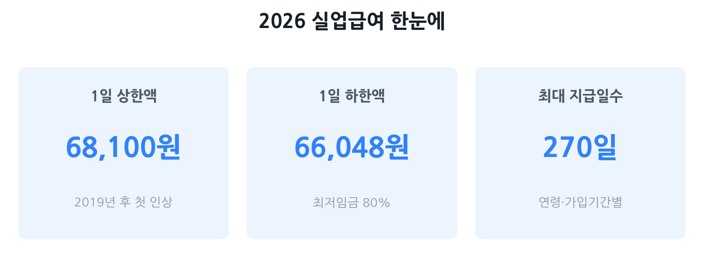

실업급여(구직급여) 완벽 가이드 2026
— 자격부터 신청·함정까지 한 번에
권고사직·계약만료·정년 등으로 갑자기 직장을 잃게 됐다면, 실업급여(구직급여)는 당신이 가장 먼저 챙겨야 할 지원금입니다. 2026년에는 6년 만에 1일 상한액이 68,100원으로 인상됐고, 반복수급 규정도 강화됐습니다. 이 가이드 하나로 "나도 받을 수 있나"부터 신청 절차, 수급 중 아르바이트 신고, 부정수급 주의사항, 조기재취업수당까지 모두 정리해 드립니다.
- 권고사직·계약만료·정년퇴직으로 비자발적으로 퇴사한 분
- "나도 실업급여 받을 수 있는지" 자격 여부가 헷갈리는 분
- 수급 기간과 금액이 얼마나 되는지 계산하고 싶은 분
- 수급 중 알바·소득 신고 방법이 궁금한 분
- 빨리 재취업하면 추가로 받는 조기재취업수당이 궁금한 분

실업급여란? 2026년 달라진 점
실업급여(구직급여)는 고용보험에 가입한 근로자가 비자발적으로 실직했을 때 재취업 활동을 하는 기간 동안 생계를 지원하는 고용보험 급여입니다. 흔히 '실업급여'라고 부르지만 정확한 명칭은 구직급여이며, 고용보험법에 따라 고용노동부·고용센터가 운영합니다.
2026년에는 두 가지 중요한 변화가 있습니다.
- 1일 상한액 인상 (68,100원) — 2019년 이후 6년 동안 고정돼 있던 상한액이 처음으로 올랐습니다. 최저임금에 연동되는 하한액(66,048원)이 기존 상한액(66,000원)을 역전할 위기에 처하자 정부가 상한액을 68,100원으로 상향 조정했습니다.
- 반복수급 감액 강화 — 최근 5년 이내 3회 이상 수급한 반복수급자는 3회째부터 구직급여액이 최대 50%까지 감액됩니다. 대기기간도 최대 4주로 늘어납니다.
나도 받을 수 있나 — 자격 자가진단
실업급여를 받으려면 아래 세 가지 요건을 동시에 충족해야 합니다.
① 피보험 단위기간 180일 이상
이직일 이전 18개월 안에 고용보험에 가입된 상태로 실제 일한 날(피보험 단위기간)이 180일 이상이어야 합니다. 달력상 6개월이 아니라 '실근무일'로 계산한다는 점에 주의하세요. 주 5일 근무 기준으로 약 8~9개월이 필요합니다.
② 비자발적 이직 (이직 사유 요건)
이직 사유가 '비자발적'으로 인정돼야 합니다. 아래 표로 빠르게 확인하세요.
| 구분 | 대표 사례 | 수급 가능 여부 |
|---|---|---|
| 비자발적 이직 | 해고, 권고사직, 계약만료, 정년퇴직, 폐업·도산 | 가능 |
| 자발적 이직 — 예외 인정 | 임금 체불(1년 내 2개월 이상), 직장 내 괴롭힘, 질병·부상으로 계속 근무 불가, 임신·출산·육아, 통근 왕복 3시간 이상이 되는 이사, 사업장 이전·위법한 근로조건 변경 등 | 조건부 가능 (고용센터 심사) |
| 단순 자발적 이직 | "더 좋은 곳으로 이직", "개인 사정", 단순 불만 등 | 불가 |
③ 재취업 의사·능력 + 적극적 구직활동
실업급여는 '취업할 의사와 능력이 있음에도 취업하지 못한 상태'에서 지급됩니다. 수급 기간 중에는 정기적으로 고용센터에 구직활동 실적을 신고(실업인정)해야 하며, 정당한 사유 없이 취업 소개를 거부하거나 훈련 지시를 거부하면 급여가 지급 정지될 수 있습니다.
얼마나 받나 — 금액과 소정급여일수
1일 구직급여액 계산
1일 구직급여액 = 퇴직 전 3개월 평균임금 × 60%. 단, 2026년 기준으로 아무리 낮아도 하한액, 아무리 높아도 상한액을 넘지 않습니다.
| 구분 | 2026년 금액 | 월 환산(30일 기준) |
|---|---|---|
| 1일 상한액 | 68,100원 | 약 2,043,000원 |
| 1일 하한액 | 66,048원 | 약 1,981,440원 |
하한액은 2026년 최저임금(시간급 10,320원) × 80% × 8시간으로 산정됩니다. 상한액은 6년 만의 인상으로, 이전 상한액(66,000원)이 하한액에 역전당하기 직전 상향된 것입니다.
소정급여일수 — 얼마나 오래 받나
구직급여를 받을 수 있는 날수(소정급여일수)는 이직 당시 만 나이와 고용보험 가입 기간에 따라 결정됩니다. 최소 120일(4개월)에서 최대 270일(9개월)입니다.
| 고용보험 가입 기간 | 50세 미만 | 50세 이상 및 장애인 |
|---|---|---|
| 1년 미만 | 120일 | 120일 |
| 1년 이상 ~ 3년 미만 | 150일 | 180일 |
| 3년 이상 ~ 5년 미만 | 180일 | 210일 |
| 5년 이상 ~ 10년 미만 | 210일 | 240일 |
| 10년 이상 | 240일 | 270일 |
예를 들어 만 42세, 고용보험 가입 기간 4년이라면 소정급여일수는 180일. 1일 상한액 68,100원으로 계산하면 최대 약 12,258,000원을 받을 수 있습니다(실제 수령은 개인 임금 수준에 따라 달라집니다).
신청 절차와 기한 — 단계별 정리
1단계 — 워크넷(고용24) 구직등록
고용24(www.work.go.kr) 또는 워크넷 앱에서 구직등록을 먼저 완료해야 합니다. 이력서를 성실하게 작성해야 하며, 구직등록 유효기간은 3개월이므로 만료 전 연장해야 합니다.
2단계 — 수급자격 신청자 온라인 교육 이수
고용보험 홈페이지(ei.go.kr)에서 온라인 교육을 먼저 이수합니다. 약 1~2시간 소요되며 수강 후 확인증이 발급됩니다.
3단계 — 고용센터 방문, 수급자격 인정 신청
거주지 관할 고용복지플러스센터를 방문해 수급자격 인정신청서와 이직확인서를 제출합니다. 이직확인서는 전 직장에서 고용보험 시스템으로 제출하는 서류이므로, 퇴사 전 회사에 발행을 요청해 두세요. 심사에 보통 7~14일이 소요됩니다.
4단계 — 실업인정 (2주~4주마다 반복)
수급자격 인정 후 지정된 실업인정일마다 고용센터를 방문하거나 온라인으로 구직활동 실적을 신고합니다. 구직활동은 입사지원·면접·취업 관련 교육 수강 등으로 인정됩니다.
5단계 — 구직급여 수령
실업인정이 완료되면 지정 계좌로 급여가 지급됩니다. 첫 실업인정 전 7일은 대기기간으로 급여가 지급되지 않습니다(반복수급자는 최대 4주).
| 단계 | 하는 일 | 채널 |
|---|---|---|
| 1. 구직등록 | 워크넷/고용24 이력서 등록 | 온라인 (고용24) |
| 2. 온라인 교육 | 수급자격 신청자 교육 이수 | 온라인 (고용보험 홈페이지) |
| 3. 자격 신청 | 수급자격 인정신청서 제출 | 고용복지플러스센터 방문 |
| 4. 실업인정 | 구직활동 실적 신고 (반복) | 온라인 또는 방문 |
| 5. 급여 수령 | 지정 계좌로 입금 | 자동 지급 |
수급 중 아르바이트·소득 신고 규칙
실업급여 수급 중 단기 아르바이트나 프리랜서 일을 하는 것이 완전히 금지된 것은 아닙니다. 하지만 하루라도 일한 사실이 있으면 반드시 신고해야 하고, 취업으로 간주되면 수급이 중단됩니다.
신고 의무
소득 금액·근로 시간과 무관하게, 하루라도 근로를 제공한 사실이 있으면 실업인정일에 반드시 신고해야 합니다. 신고하면 근로한 날만큼 구직급여가 지급되지 않거나 감액됩니다.
취업으로 간주되는 기준 (수급 중단)
- 1개월 소정근로시간이 60시간 이상으로 정해 근로한 경우
- 영리 목적으로 3개월 이상 계속 근로를 제공한 경우
- 일용근로자로서 근로를 제공한 경우 (당일 신고 필요)
- 근로 대가가 1일 구직급여액 이상인 경우
놓치면 손해 보는 함정 6가지
함정 1 — 사직서에 '일신상의 사유'를 쓰면 자발적 퇴사가 된다
회사가 권고사직을 강요하면서 사직서에 '일신상의 사유', '개인 사정' 등을 쓰도록 유도하는 경우가 있습니다. 이렇게 제출하면 이직확인서에 자발적 퇴사로 처리되어 실업급여를 받지 못할 수 있습니다. 퇴사 전 이직확인서의 이직 사유 코드를 반드시 확인하고, '권고사직'이나 '계약기간 만료'로 기재돼 있는지 체크하세요.
함정 2 — 신청 기한(12개월)을 지나치면 아무것도 못 받는다
이직일 다음 날부터 12개월이 지나면 소정급여일수가 남아 있더라도 더 이상 구직급여를 받을 수 없습니다. 쉬다가 천천히 신청하겠다는 생각은 금물입니다.
함정 3 — 부정수급은 최대 5배 추가 징수 + 형사처벌
근로 사실을 신고하지 않거나 거짓으로 신고하면 부정수급으로 처리됩니다. 받은 급여 전액 환수 + 최대 5배 추가 징수가 부과되며, 형사처벌(사기죄) 대상이 될 수 있습니다. 고용보험 전산망은 국세청·건강보험 등과 연계되므로 나중에 걸리는 경우도 많습니다.
함정 4 — 반복수급은 횟수가 쌓일수록 급여가 줄어든다
최근 5년 내 수급 횟수가 3회 이상이면 반복수급자로 분류되어 3회째부터 10%씩 감액이 시작되고, 6회 이상이면 최대 50%까지 삭감됩니다. 대기기간도 일반 7일에서 최대 4주로 늘어납니다.
함정 5 — 질병으로 구직이 어려울 때는 상병급여를 신청해야 한다
수급 중에 질병·부상으로 실업인정을 받을 수 없게 됐다면 상병급여를 신청할 수 있습니다. 이 경우 구직급여일액과 동액이 지급됩니다. 아무 말 없이 실업인정을 건너뛰면 급여가 끊기니, 치료·입원 중에는 반드시 고용센터에 알리세요.
함정 6 — 재취업 후 급여 종료를 놓치면 조기재취업수당을 못 받는다
재취업한 날 바로 수급 종료 신고를 해야 합니다. 취업 후에도 실업급여를 계속 받으면 부정수급이 되고, 조기재취업수당 자격도 잃습니다. 재취업 당일 고용센터에 신고하는 것이 원칙입니다.
조기재취업수당 — 빨리 취업하면 더 받는다
실업급여 수급 중 빨리 취업하면 패널티가 없을까요? 오히려 보너스가 있습니다. 바로 조기재취업수당입니다.
수급 요건
- 소정급여일수의 1/2 이상이 남아 있는 상태에서 재취업
- 재취업 후 12개월 이상 계속 고용될 것
- 최종 이직 전 직장에 재취업하지 않을 것
- 수급자격 신청 전에 채용이 확정된 곳이 아닐 것
수당 금액
남은 구직급여 추정액(잔여 소정급여일수 × 1일 구직급여액)의 50%를 일시불로 지급합니다.
신청 방법
재취업 후 12개월 근속이 확인된 뒤 고용보험 홈페이지(ei.go.kr) 또는 고용센터에 방문해 조기재취업수당 청구서를 제출합니다. 12개월 근속을 채우지 못하면 지급되지 않으므로 반드시 기간을 채운 뒤 신청하세요.
자주 묻는 질문
Q. 권고사직을 당했는데 실업급여를 받을 수 있나요?
네, 받을 수 있습니다. 권고사직은 회사가 먼저 퇴사를 권유하고 근로자가 이에 동의한 것이므로 비자발적 이직으로 분류됩니다. 이직확인서에 '권고사직'으로 기재됐는지 반드시 확인하고, 이직일 이전 18개월간 피보험 단위기간 180일 이상 요건을 충족하면 신청하세요.
Q. 스스로 그만뒀는데도 실업급여를 받을 수 있는 경우가 있나요?
있습니다. 임금 체불(1년 이내 2개월 이상), 직장 내 괴롭힘, 질병·부상으로 계속 근무가 어려운 경우, 임신·출산·육아, 배우자 동거를 위한 이사로 통근 왕복 3시간 이상, 위법한 근로조건 변경 등이 객관적으로 인정되면 자진퇴사라도 예외적으로 수급 자격이 인정될 수 있습니다. 고용센터 심사를 받아야 하므로 증빙 자료(임금 미지급 내역, 진단서, 재직 중 항의 기록 등)를 준비하세요.
Q. 실업급여 받는 중에 아르바이트를 하면 어떻게 되나요?
하루라도 일한 사실이 있으면 반드시 실업인정일에 신고해야 합니다. 신고하면 근로한 날만큼 급여가 차감됩니다. 미신고 시 부정수급으로 처리되어 받은 급여 전액 환수에 최대 5배 추가 징수까지 부과될 수 있습니다. 소액이라도 신고하는 것이 안전합니다.
Q. 실업급여 신청은 언제까지 해야 하나요?
이직일 다음 날부터 12개월 이내에 신청해야 합니다. 이 기간이 지나면 소정급여일수가 남아 있어도 더 이상 받을 수 없습니다. 퇴사 직후 바로 워크넷 구직등록과 고용센터 신청을 진행하는 것이 유리합니다.
Q. 조기재취업수당은 얼마나 받나요?
소정급여일수의 1/2 이상이 남아 있는 상태에서 재취업하여 12개월 이상 계속 고용되면, 남은 구직급여 추정액의 50%를 일시불로 받을 수 있습니다. 빨리 취업할수록, 남은 일수가 많을수록 금액이 커집니다. 재취업 12개월 후 고용보험 홈페이지 또는 고용센터에서 청구하면 됩니다.
본 글은 고용노동부·고용보험법·찾기쉬운생활법령정보(easylaw.go.kr)·고용보험 홈페이지(ei.go.kr) 등 공개 자료를 바탕으로 2026년 6월 기준 작성됐습니다. 2026년 1일 상한액 68,100원·하한액 66,048원·소정급여일수 표는 복수의 공개 자료에서 교차 확인한 수치입니다. 개인 수급 자격·금액은 구체적 상황에 따라 달라질 수 있으므로, 신청 전 반드시 고용보험 홈페이지 모의계산기(ei.go.kr) 또는 관할 고용복지플러스센터에서 공식 확인하시기 바랍니다. 본 페이지는 정보 제공 목적이며 수급을 보장하지 않습니다.